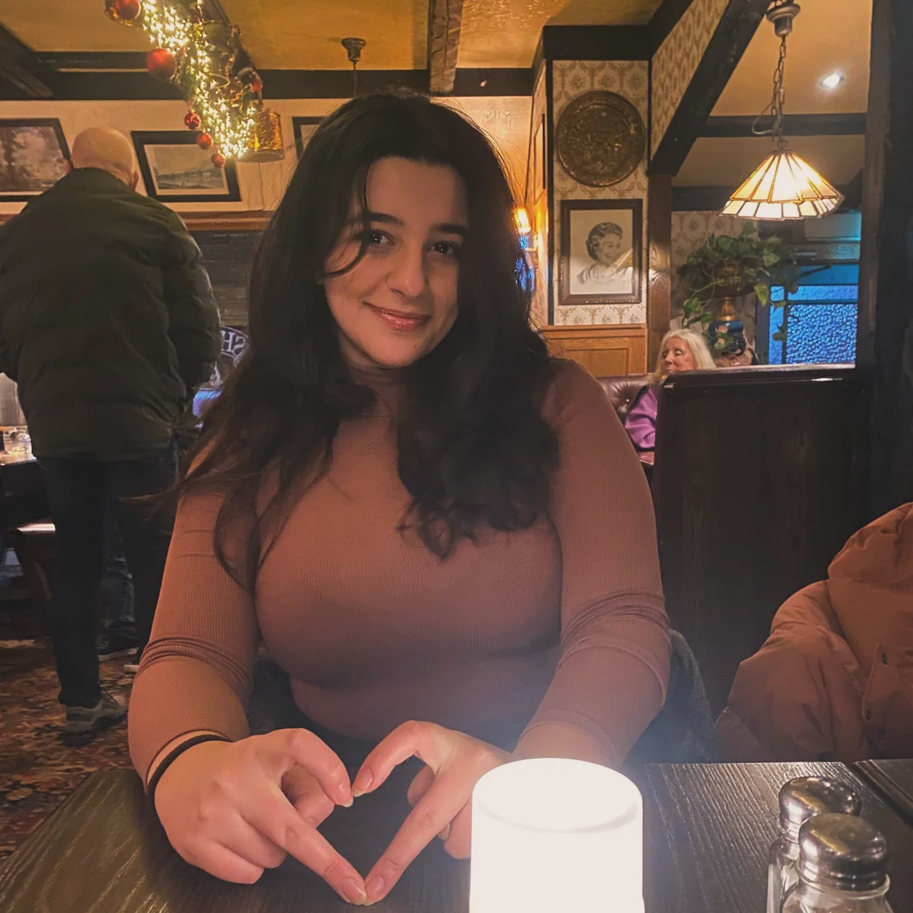

Welcome to my first website
Hi, I am Elina Asratyan! I am studying New Media Design at Jönköping University, where I get to mix creativity with tech to create cool digital projects. I am still learning, but I have already had fun designing brands and working on small interactive games. When I am not busy with school, you wll probably find me dancing, playing piano, or just diving into something creative. Take a look around my site, and do not be shy—reach out through the contact page!